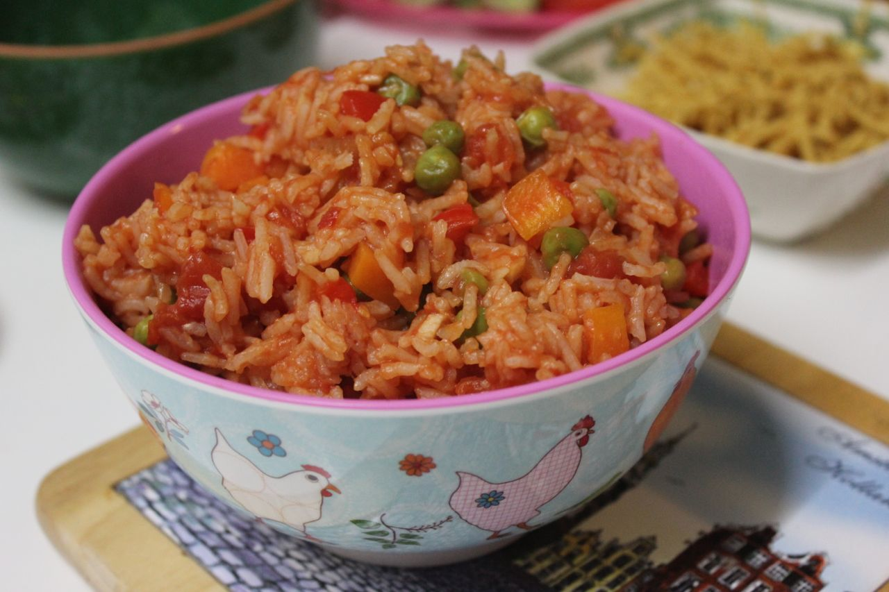

Microwave Mexican Rice

This no-fuss microwave Mexican rice is quick and simple. Using instant rice, it comes together in a flash, and goes great with tacos, burritos, and enchiladas.
Ingredients:
- Instant Rice
- Water
- Picante Sauce
- Chopped green chiles
- Envelop taco seasoning
Steps:
- Place minute rice, water, picante sauce, green chiles, and taco seasoning in a large microwave-safe baking dish. Stir until evenly combined.
- Microwave, uncovered, on High for 8 minutes. Let sit for 5 minutes to absorb liquid. Fluff with a fork and serve.